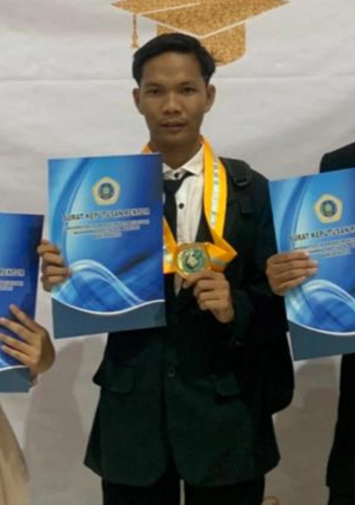

Lulusan S1 Sistem Informasi
Kab. Banjar, Kalimantan Selatan
📧 helmi.zh28@gmail.com
📞 0831-9234-7528
Lulusan S1 Sistem Informasi dengan IPK 3,67 dan pengalaman sebagai Admin Intern di Badan Pusat Statistik Kabupaten Banjar. Memiliki keahlian dalam pengolahan data, administrasi, dan pengembangan sistem informasi berbasis web. Terbiasa mengelola data secara akurat, menyusun laporan berbasis Excel, serta bekerja secara sistematis dan berbasis target. Siap berkontribusi dalam bidang administrasi, data analyst, maupun IT support.
Peserta Magang / PKL
Aplikasi web berbasis PHP untuk pengolahan data kependudukan (kelahiran, kematian, migrasi, pekerjaan, dan laporan statistik) yang dikembangkan saat magang di BPS Kabupaten Banjar.
Website portofolio online menggunakan HTML, Tailwind CSS, dan jsPDF untuk unduh CV otomatis.
Badan Nasional Sertifikasi Profesi (BNSP)
Berlaku: 2025 – 2028
📥 Download Sertifikat